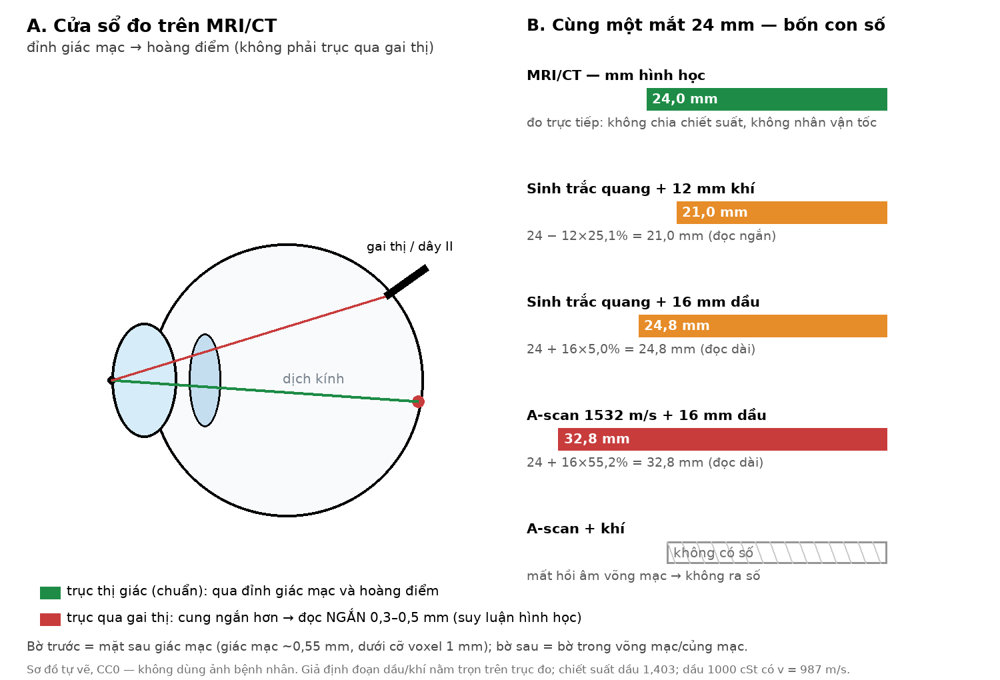
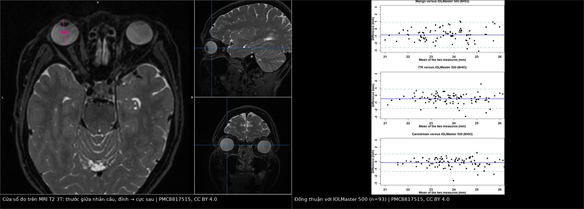
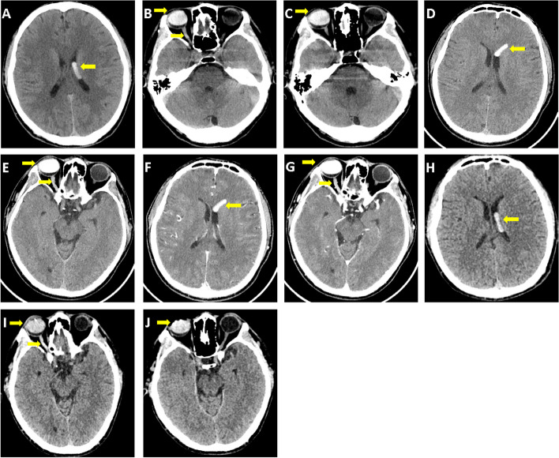

429 — Đo trục nhãn cầu bằng MRI/CT khi sinh trắc quang và A-scan đều thất bại / Axial length by MRI or CT when optical biometry and A-scan fail
Tags: pattern:al-gia pattern:sinh-trac-that-bai vung:mat vung:hoc-mat anatomy:giac-mac anatomy:hoang-diem anatomy:vong-mac protocol:MRI-hoc-mat protocol:CT-hoc-mat protocol:B-scan score:Barrett-Universal-II
Mức chắc chắn (certainty): tổng hợp y văn (literature synthesis) — số liệu từ 93 người MRI não so IOLMaster 500 (BMC Ophthalmol 2022, PMC8817515), 32 người MRI chuỗi fully-refocused steady-state so IOLMaster 500 (Int Ophthalmol 2021, PMID 33619690), 1.245 người MRI 1 mm³ tự động (PLoS One 2026, PMC13327317), 12 mắt CT trước lấy dầu silicone (Br J Ophthalmol 2002, PMC1770965), 1 ca dầu trong não thất (BMC Ophthalmol 2025, PMC11883950). Câu nào là suy luận vật lý/hình học được ghi [suy luận] ngay tại chỗ.
Vì sao bài này quan trọng: 1477 đã chốt dầu silicone làm sinh trắc quang đọc DÀI ~0,80 mm và A-scan đọc dài tới +55%; 1490 chốt bóng khí làm sinh trắc quang đọc NGẮN 25,1% và A-scan qua khí mất hồi âm. Cả hai bài đều kết thúc bằng "chờ" hoặc "dùng AL cũ". Nhưng có nhóm bệnh nhân không còn AL cũ, không chờ được, và không đo lại được: giác mạc đục dày + thể thủy tinh đục cả hai mắt, mắt bơm khí/dầu chưa tan, trẻ không cố định mắt, tuyến trước không có máy sinh trắc. Với nhóm này, MRI/CT là cây thước thứ ba — và điều quan trọng là hiểu cái sai của nó khác hẳn cái sai của hai cây thước kia: nó không bị chiết suất hay vận tốc âm làm lệch, nhưng bờ đo mờ theo voxel và trục đo dễ đặt nhầm. Đặt IOL theo một AL sai 0,5 mm là lệch khúc xạ ~1,4 D — đủ để phải mổ lại đổi IOL.
1. Tổng quan — ba cây thước, ba giả định khác nhau
- Sinh trắc quang (partial coherence interferometry — PCI, hoặc swept-source OCT — SS-OCT) đo quang trình rồi chia cho chiết suất nhóm quy ước của dịch kính n = 1,336. Siêu âm A-scan đo thời gian bay rồi nhân với vận tốc quy ước 1532 m/s. Cả hai đều ngầm giả định khoang sau thể thủy tinh chứa dịch kính.
- MRI và CT đo trực tiếp độ dài hình học (mm) — không có chiết suất, không có vận tốc âm. Vì vậy dầu silicone hay bóng khí KHÔNG làm số đo bị lệch theo một hằng số như ở hai phương pháp kia. Đây là lý do duy nhất khiến MRI/CT đáng dùng trong đúng nhóm bệnh nhân này [vật lý].
- Nhưng sai số chỉ đổi chỗ, không mất đi. Ba nguồn sai của MRI/CT: (1) bờ đo — giác mạc dày ~0,55 mm, mỏng hơn cả voxel 1 mm, nên máy không "thấy" bờ trước mà người đọc phải chọn (mặt sau giác mạc hay mặt trước?); (2) trục đo — trục thị giác qua hoàng điểm khác trục qua gai thị; (3) độ phân giải — 0,7–1 mm mỗi voxel so với 0,01 mm của IOLMaster.
- Định lượng "cùng một mắt, bốn con số": với nhãn cầu thật 24,0 mm, bơm 12 mm khí thì sinh trắc quang đọc 21,0 mm (−25,1% đoạn khí); bơm 16 mm dầu thì sinh trắc quang đọc 24,8 mm (+5,0%, tức +0,80 mm) còn A-scan để vận tốc mặc định đọc 32,8 mm (+55,2%). MRI/CT vẫn ra 24,0 mm [suy luận số học từ hằng số 1,336 / 1,403 / 1532 / 987 m/s, đúng bằng các sai số đã đo ở bài 1477 và 1490].
- Lan truyền sang khúc xạ: 0,1 mm AL ≈ 0,28 D (ngưỡng dùng chung của dòng sinh trắc). Nghĩa là: 0,4 mm ≈ 1,1 D; 0,5 mm ≈ 1,4 D; 0,8 mm ≈ 2,2 D [suy luận số học]. Đây là thước đo để phán "số MRI này có đủ tin để đặt IOL không".
- Vì sao đây là việc của CĐHA: chỉ người đọc ảnh mới quyết định đặt thước ở đâu, trên lát nào, cửa sổ nào. Một AL đo trên MRI não 4 mm (không qua hoàng điểm, bờ sau là "bờ củng mạc ngoài") có thể lệch hàng milimét mà vẫn "trông hợp lý" trên ảnh.

Sơ đồ tự vẽ (CC0): (A) cửa sổ đo chuẩn là đỉnh giác mạc → hoàng điểm, không phải trục qua gai thị (cung ngắn hơn 0,3–0,5 mm [suy luận hình học]); (B) bốn con số trên cùng một mắt 24 mm khi có 12 mm khí hoặc 16 mm dầu. Giả định đoạn dầu/khí nằm trọn trên trục đo.2. Mẫu hình + chẩn đoán phân biệt theo lý do thất bại (gamut)
Câu hỏi trung tâm không phải "chụp MRI hay CT" mà "vì sao không đo được, và còn cách nào rẻ hơn". Sáu bệnh cảnh, sáu quyết định:
- A. Đục cả hai môi trường (giác mạc dày + thể thủy tinh đục) — sinh trắc quang không có tín hiệu, A-scan không có đỉnh võng mạc rõ. Đây là chỉ định kinh điển của MRI/CT: không có gì để chờ, không có AL cũ. Ưu tiên MRI T2 lát ≤3 mm qua trục thị giác; CT chỉ khi MRI chống chỉ định/không có.
- B. Mắt còn bóng khí (SF6/C2F6/C3F8). Sinh trắc quang đọc ngắn 25,1% đoạn khí, A-scan mất hồi âm (bài 1490). Chờ là lựa chọn số một (SF6 10–14 ngày, C2F6 5–6 tuần, C3F8 8–10 tuần). MRI chỉ dùng khi buộc phải có AL ngay — và phải nhớ khí không có proton nên là vùng trống tín hiệu, mặt phân cách khí–dịch còn gây mất tín hiệu cục bộ [suy luận vật lý].
- C. Mắt bơm dầu silicone. MRI/CT không bị +5,0%/+55,2% vì đo hình học — nhưng dầu cũng không có proton (MRI: trống tín hiệu, dễ nhầm bờ) và dầu rất "sáng" trên CT: 106–139 HU, so với máu 50–90 HU (BMC Ophthalmol 2025, PMC11883950). Tức là trên CT, nhãn cầu bơm dầu tăng đậm độ, và bờ sau dễ bị đọc thành "dày, xơ, vôi".
- D. Mắt không cố định/không hợp tác (trẻ nhỏ, rung giật nhãn cầu, co quắp mi). Sinh trắc quang cần cố định thị giác; MRI/CT không cần. Nhưng mắt nhìn lệch ngang làm trục đo chéo — trong một nghiên cứu 1.245 người, 549 người bị loại vì mặt phẳng/cử chỉ mắt không đạt (PLoS One 2026, PMC13327317), tức đây là yếu tố quyết định chất lượng, không phải chi tiết phụ.
- E. Đã có AL trước đó (trước bơm dầu/khí, trước khi giác mạc đục thêm). Đây là phương án bị bỏ qua nhiều nhất: AL bền theo thời gian (ICC 0,97 sau 2 năm, bài 1490 dẫn PMC6203743). Trước khi đặt máy chụp, hãy lục hồ sơ sinh trắc cũ — rẻ hơn, chính xác hơn mọi phép đo trên ảnh.
- F. Chấn thương, nghi vỡ nhãn cầu, dị vật. Ở đây CT là modality đầu tay vì lý do khác hẳn (xương, dị vật, khí trong ổ mắt — bài 449), và AL chỉ là thông tin thứ cấp đo được trên chính lát CT đó.
Gamut "vì sao số đo trên ảnh vẫn sai" (theo cơ chế):
| Cơ chế | Dấu hiệu nhận ra | Hướng sai |
|---|---|---|
| Bờ trước chọn sai (giác mạc ~0,55 mm < voxel 1 mm) | Thước bắt đầu ở mặt trước giác mạc thay vì mặt sau | Dài giả |
| Trục qua gai thị thay vì hoàng điểm | Đường đo đi vào đĩa thị, không vào điểm tối trung tâm hoàng điểm | Ngắn giả 0,3–0,5 mm [suy luận hình học] |
| Lát 4 mm + gap 1,2 mm (MRI não thường quy) | Không có lát nào chứa cung dài nhất của nhãn cầu | Ngắn giả, thay đổi theo lần chụp |
| Đầu nghiêng, mắt nhìn lệch ngang | Nhãn cầu không nằm trọn trong mặt phẳng cắt | Ngắn giả, khó tái lập |
| Dầu/khí không có proton (MRI) | Vùng trống tín hiệu trong khoang dịch kính, bờ sau "biến mất" | Không xác định bờ → sai không đoán được chiều |
| Dầu silicone 106–139 HU (CT) | Nhãn cầu tăng đậm độ, viền sau trông dày | Đọc nhầm bờ củng mạc ngoài hoặc "xơ/vôi" → sai chiều tùy cửa sổ |
| Cửa sổ hẹp trên CT | Bờ võng mạc–dịch kính mất tương phản, chỉ còn xương và dầu | Người đọc tự "vẽ" bờ → không tái lập |
3. Bảng so sánh phân biệt (ma trận đối chiếu)

*Trái: MRI T2 3T (lát 4 mm, in-plane 0,7 × 0,7 mm) — thước đặt giữa nhãn cầu từ đỉnh tới cực sau; đây không phải trục thị giác qua hoàng điểm. Phải: Bland–Altman so IOLMaster 500 trên 93 người — lệch trung bình −0,1 mm (Carestream), −0,5 mm (ITK), −0,8 mm (Mango), giới hạn đồng thuận trải 0,9 đến −2,6 mm. Ảnh ghép letterbox, không crop/kéo giãn; nguồn: BMC Ophthalmol 2022 (PMC8817515), CC BY 4.0.*| Thực thể (entity) | Hình ảnh/chỉ số điển hình | Chốt vào (rule-in) | Chốt loại (rule-out) | Gợi ý xác nhận |
|---|---|---|---|---|
| Sinh trắc quang (PCI/SS-OCT) | AL/QS hiện ngay, độ phân giải 0,01 mm; sai số 0,1 mm ≈ 0,28 D | Máy ra số + QS đạt + 3 lần lệch ≤ 0,1 mm | Không ra số / QS không đạt ở mắt đục dày, bơm khí, bơm dầu (1477, 1490) | So với AL cũ; đo lại sau khi hết khí/dầu |
| A-scan tiếp xúc (vận tốc 1532 m/s) | Đỉnh giác mạc–thủy tinh–võng mạc; không có đỉnh võng mạc khi có khí | Có đỉnh võng mạc rõ, lặp lại được, mắt không bơm khí | Dầu 1000 cSt mà để 1532 m/s → đọc +55% (31,8 mm ở mắt 24 mm) | Đặt vận tốc riêng cho dầu, hoặc bỏ |
| B-scan ngâm phân đoạn (immersion, segmented) | Đo riêng đoạn trước và đoạn dầu, chỉ đổi vận tốc đoạn dầu | Môi trường đục nhưng còn bờ võng mạc trên B-scan; ở 31 mắt cận thị rất cao: AL 30,46 vs 30,42 mm sau lấy dầu (p = 0,542) | Không xác định được bờ sau (khí, dầu nhũ tương, bong hắc mạc) | So AL trước/sau lấy dầu; đây là phương án dự phòng rẻ nhất |
| MRI T2 lát ≤3 mm (hoặc 3D 1 mm) | Đo mm hình học; 93 người: lệch trung bình −0,1 mm (phần mềm tốt nhất), −0,8 mm (phần mềm kém), giới hạn đồng thuận 0,9…−2,6 mm | Hai lần đo lệch ≤ 0,2 mm, mắt nhìn thẳng, lát qua đỉnh–hoàng điểm, khớp AL cũ/mắt bên ±0,5 mm | Lệch > 0,5 mm so với AL cũ/mắt bên; mặt phẳng không qua hoàng điểm; mắt nhìn lệch ngang | Đo 2–3 lần trên hệ thống 3D reformat (không tin ảnh 2D 4 mm) |
| MRI chuỗi fully-refocused steady-state (FRSS) | AL LoA 0,019 ± 0,383 mm ở 32 người; ACD 0,016 ± 0,266 mm; trong cùng người 0,000 ± 0,157 mm | Dùng để mô tả/so sánh, không để tính công suất | Tác giả kết luận không khuyến cáo cho tính công suất IOL vì độ biến thiên | Chỉ dùng khi không còn lựa chọn, và phải ghi rõ nguồn số |
| CT hốc mắt (0,5–0,625 mm, MPR) | Nhãn cầu hình cầu, dầu 106–139 HU; đo trên MPR qua trục | Cần AL "tức thời" ở chấn thương, hoặc MRI chống chỉ định | 12 mắt dầu silicone: chỉ 50% trong ±1 D, 75% trong ±2 D; 3 mắt sai > 2 D đều có AL ≥ 27 mm | Không dùng CT để "tối ưu" khúc xạ ở mắt dài; dùng cho mục đích cấp cứu |
| Mượn AL mắt bên | Hai mắt chênh < 0,3 mm khi cân xứng | Mắt bên lành, không băng/đai, không cận thị lệch | Lệch khúc xạ > 1 D, đã đặt đai củng mạc, cận thị một bên | MedAE 1,02–1,08 D so với 0,42 D khi có AL chính mắt (bài 1477) — chỉ là lựa chọn cuối |
Ba con số cần nhớ của bài này
- −0,1 mm — lệch trung bình tốt nhất giữa MRI (phần mềm Carestream) và IOLMaster 500 trên 93 người; đây là mức sàn của phương pháp, không phải "sai số bằng 0".
- 0,9 đến −2,6 mm — giới hạn đồng thuận của cùng nghiên cứu đó: nghĩa là một cá nhân có thể lệch tới 2,6 mm dù trung bình đẹp (~7 D).
- 50% — tỉ lệ mắt bơm dầu đạt ±1 D khi AL lấy từ CT (12 mắt); 97,2% là tỉ lệ mắt thường đạt ±1 D khi sinh trắc đúng cách (Semin Ophthalmol 2019, PMID 31257972).
4. Protocol + ngưỡng + sơ đồ quyết định
4.1. MRI — trình tự đo (không nhảy bước)
- Chọn chuỗi: ưu tiên 3D T1 hoặc T2 đẳng hướng 1 mm³ (176 lát, FOV 256 mm — thông số của nghiên cứu 1.245 người, PLoS One 2026) để có thể reformat theo trục thị giác; nếu chỉ có 2D thì lát ≤ 3 mm, không gap (nghiên cứu 2022 dùng 4 mm + gap 1,2 mm, in-plane 0,7 × 0,7 mm và chính tác giả ghi nhận cung dài nhất có thể rơi vào gap).
- Tư thế: đầu thẳng, mắt nhìn thẳng về phía trước, nhắm mắt tự nhiên; loại các trường hợp nhìn lệch ngang (đây là tiêu chí loại của nghiên cứu lớn).
- Định vị nhãn cầu: xác định tâm nhãn cầu trên 3 mặt phẳng trực giao, rồi đặt lại mặt phẳng cắt qua đỉnh giác mạc và hoàng điểm (reformat), không đo trên lát ngang ngẫu nhiên.
- Đặt thước: bờ trước = mặt sau giác mạc; bờ sau = bờ trong võng mạc/củng mạc tại hoàng điểm. Định nghĩa "mặt sau giác mạc → cực sau nhãn cầu" là định nghĩa chuẩn của các pipeline tự động, vì bề dày giác mạc và võng mạc gần như triệt tiêu nhau (PLoS One 2026).
- Đo 2–3 lần, ghi cả 3 số, lấy trung bình; chỉ chấp nhận khi chênh ≤ 0,2 mm (tương ứng độ lặp lại trong cùng người 0,000 ± 0,157 mm của chuỗi FRSS).
- Đối chiếu chéo: AL cũ, AL mắt bên, hình dạng nhãn cầu (có staphyloma không — mắt cận thị cao là nhóm hay bị đọc ngắn trước mổ).
4.2. CT — chỉ khi có lý do
- Kỹ thuật: xoắn ốc 0,5–0,625 mm, tái tạo MPR theo trục nhãn cầu; đọc trên hai cửa sổ (mô mềm và cửa sổ rộng) vì bờ võng mạc–dịch kính mất tương phản ở cửa sổ hẹp.
- Chỉ định hẹp: chấn thương/vỡ nhãn cầu, dị vật, MRI chống chỉ định, hoặc cần AL trong vài giờ. Không dùng CT như bước "chính xác hóa" khúc xạ ở mắt dài: ở 12 mắt bơm dầu, sai số > 2 D rơi đúng vào nhóm AL ≥ 27 mm (Br J Ophthalmol 2002, PMC1770965).
- Liều: thể thủy tinh là cơ quan nhạy cảm với bức xạ, không có ngưỡng "an toàn tuyệt đối" — ALARA, và MRI thay thế được thì thay.
4.3. Ngưỡng dùng để quyết định (bảng sống còn)
| Chỉ số | Ngưỡng | Ý nghĩa thực hành |
|---|---|---|
| Sai số AL → khúc xạ | 0,1 mm ≈ 0,28 D | 0,4 mm ≈ 1,1 D; 0,5 mm ≈ 1,4 D; 0,8 mm ≈ 2,2 D [suy luận] |
| Chênh giữa 2 lần đo MRI | ≤ 0,2 mm | Trên ngưỡng này → không dùng số đó để tính công suất |
| Chênh AL MRI với AL cũ/mắt bên | ≤ 0,5 mm | > 0,5 mm → ưu tiên chờ/lấy dầu/lấy khí, hoặc mổ hai thì |
| Giới hạn đồng thuận MRI vs IOLMaster | 0,9 … −2,6 mm | Tư vấn bệnh nhân: có thể lệch tới ~2 D, không hứa emmetropia |
| CT ở mắt bơm dầu | 50% ±1 D; 75% ±2 D | Chỉ dùng khi không còn cách nào khác |
| CT khi AL ≥ 27 mm | Toàn bộ 3 mắt sai > 2 D nằm ở nhóm này | Mắt cận thị cao: không tin CT |
| Thời gian chờ khí (nếu chờ được) | SF6 10–14 ngày · C2F6 5–6 tuần · C3F8 8–10 tuần | Rẻ hơn và chính xác hơn mọi phép đo trên ảnh (bài 1490) |
| Khi đã quyết đặt IOL theo AL "không hoàn hảo" | Nhắm dư +0,25 đến +0,50 D | Sai số cận thị dễ sửa hơn viễn thị; và cảnh báo trước khả năng đổi IOL |
4.4. Sơ đồ quyết định
flowchart TD
A[Sinh trắc quang không ra số] --> B{Co AL cu hoac mat ben tin duoc?}
B -->|Co| C[Dung AL cu, doi chieu +-0,5 mm]
B -->|Khong| D{Mat bom khi hay dau?}
D -->|Khi| E[Cho khi tan: SF6 10-14 ngay, C2F6 5-6 tuan, C3F8 8-10 tuan]
D -->|Dau| F[B-scan ngam phan doan hoac cho lay dau]
E --> G{Van buoc phai co AL de mo?}
F --> G
G -->|Khong| H[Mo hai thi hoac hoan dat IOL]
G -->|Co| I[MRI 3D 1 mm hoac T2 lat <=3 mm qua truc thi giac]
I --> J{Hai lan do lech <=0,2 mm va khop AL cu/mat ben +-0,5 mm?}
J -->|Co| K[Du tin: tinh IOL, nham du +0,25 den +0,50 D]
J -->|Khong| L[CT 0,5-0,625 mm neu can cap cuu, hoac cho; khong dat IOL theo so khong tai lap]
5. Biến thể bình thường và cạm bẫy
- Cạm bẫy #1 — trục qua gai thị. Trên lát ngang thường quy, "đường dài nhất" của nhãn cầu rất dễ đi vào đĩa thị thay vì hoàng điểm. Cung này ngắn hơn cung qua hoàng điểm 0,3–0,5 mm [suy luận hình học] — đúng bằng 1–1,4 D. Cách tránh: reformat qua điểm tối trung tâm hoàng điểm, hoặc nếu không thấy hoàng điểm thì ghi rõ là trục gai thị và hạ độ tin.
- Cạm bẫy #2 — lát quá dày + gap. Bộ MRI não 4 mm/1,2 mm gap không đảm bảo chứa cung dài nhất; đo trên 2D còn phụ thuộc góc đầu. Nếu chỉ có bộ ảnh đó, coi AL là ước lượng, không phải số để đặt IOL.
- Cạm bẫy #3 — bờ trước. Giác mạc ~0,55 mm, dưới độ phân giải 1 mm: người đọc có thể bắt đầu ở mặt trước giác mạc → dài giả ~0,5 mm. Quy ước: mặt sau giác mạc.
- Cạm bẫy #4 — CT ở mắt bơm dầu. Dầu silicone 106–139 HU (máu 50–90 HU), nên nhãn cầu tăng đậm độ và viền sau trông dày. Đây là lý do "dày củng mạc" trên CT mắt bơm dầu thường chỉ là dầu — và cũng là lý do không được đọc "tăng đậm độ trong nhãn cầu" là xuất huyết.
- Cạm bẫy #5 — tín hiệu trống trên MRI. Cả khí và dầu silicone đều không có proton di động → vùng trống tín hiệu; mặt phân cách với dịch còn gây dịch chuyển hóa học 1–2 pixel [suy luận vật lý]. Vì vậy "thấy nhãn cầu đen" không đồng nghĩa đo được bờ sau.
- Cạm bẫy #6 — thoả mãn tìm kiếm (satisfaction of search). Đo được AL rồi dừng, bỏ qua bong võng mạc, khối nội nhãn, vỡ nhãn cầu — những thứ làm hoãn mổ đặt IOL hoàn toàn.
- Cạm bẫy #7 — K cũng không tin được. Nếu giác mạc đục dày thì keratometry cũng sai; AL đẹp không cứu được công suất IOL khi K mù mờ. Trong tình huống đó, cân nhắc mổ hai thì hoặc IOL công suất "an toàn" thay vì chạy theo emmetropia.

CT sọ không cản quang ở bệnh nhân đã bơm dầu silicone mắt phải: nhãn cầu và dây thị giác phải tăng đậm độ (dầu 106–139 HU), kèm khối tăng đậm độ không phụ thuộc trong não thất trái — ban đầu bị đọc là xuất huyết nội sọ, sau xác định là dầu silicone di chuyển. Ảnh nguyên bản, không chỉnh sửa: BMC Ophthalmol 2025 (PMC11883950), CC BY-NC-ND 4.0.6. Tự lượng giá — Blind Quiz
Ca 1 — Nam 58 tuổi, mắt phải đã bơm dầu silicone 2 năm, nay đục thể thủy tinh nặng; sinh trắc quang không ra số, A-scan chỉ có đỉnh giác mạc. CT sọ được chỉ định vì lý do khác.
- Gợi ý: bệnh nhân cần phẫu thuật phaco + lấy dầu; tuyến trước hỏi "AL bao nhiêu".
- Câu hỏi: (1) Vì sao nhãn cầu phải tăng đậm độ? (2) Có nên đo AL trên chính lát CT này để tính công suất IOL không? (3) Nêu 2 phương án tốt hơn.
Bấm để hiện đáp án (findings + chẩn đoán)
- Findings: nhãn cầu phải tăng đậm độ đồng nhất, dây thị giác phải cũng tăng đậm độ; không có mức dịch–dầu rõ; kèm khối tăng đậm độ không phụ thuộc trong não thất trái.
- Chẩn đoán: dầu silicone nội nhãn (đậm độ 106–139 HU, cao hơn máu 50–90 HU vì có nguyên tử silic), và dầu di chuyển vào não thất — không phải xuất huyết.
- Không nên đo AL trên lát CT này để tính công suất: nghiên cứu 12 mắt bơm dầu cho thấy chỉ 50% trong ±1 D, 75% trong ±2 D, và cả 3 mắt sai > 2 D đều có AL ≥ 27 mm (Br J Ophthalmol 2002, PMC1770965).
- Tốt hơn: (1) B-scan ngâm phân đoạn với vận tốc riêng cho dầu, hoặc (2) chờ lấy dầu rồi đo lại (mổ hai thì) — và nếu buộc phải mổ một thì, dùng AL cũ trước khi bơm dầu nếu có.
- Nguồn ảnh: BMC Ophthalmol 2025 (PMC11883950), CC BY-NC-ND 4.0.
Ca 2 — Nữ 71 tuổi, đục thể thủy tinh cả hai mắt, giác mạc thoái hóa dày; sinh trắc quang báo lỗi, A-scan không có đỉnh võng mạc. Khoa chụp làm MRI não T2.
- Câu hỏi: (1) Đường đo trong ảnh trái đi qua hoàng điểm hay gai thị? (2) Đọc giới hạn đồng thuận ở ảnh phải: sai số lớn nhất có thể là bao nhiêu, tương đương bao nhiêu D? (3) Với kết quả này, có đặt IOL ngay không?
Bấm để hiện đáp án (findings + chẩn đoán)
- Findings: ảnh trái — thước chạy từ đỉnh giác mạc tới cực sau, đặt giữa nhãn cầu trên lát ngang; không chứng minh đường đi qua hoàng điểm (lát 4 mm, không reformat). Ảnh phải — lệch trung bình −0,1 mm (phần mềm tốt nhất) nhưng giới hạn đồng thuận trải 0,9 đến −2,6 mm.
- Tính toán: 2,6 mm × 2,8 D/mm ≈ 7,3 D ở cực xấu nhất; với 0,5 mm đã là ~1,4 D.
- Quyết định: chỉ dùng khi hai lần đo lệch ≤ 0,2 mm và khớp AL cũ/mắt bên ±0,5 mm; nếu không → reformat 3D qua trục thị giác, đo lại, hoặc mổ hai thì. Nhắm dư +0,25 đến +0,50 D và tư vấn trước khả năng lệch khúc xạ.
- Nguồn ảnh: BMC Ophthalmol 2022 (PMC8817515), CC BY 4.0 (ảnh ghép letterbox).
Ca 3 — Bé 7 tuổi, rung giật nhãn cầu, không hợp tác; cần AL để tính IOL sau chấn thương. Khoa chụp có MRI 1 mm³.
- Câu hỏi: (1) Vì sao MRI/CT không bị lỗi như sinh trắc quang ở mắt bơm dầu/khí? (2) Hai điều kiện bắt buộc để tin số đo trên MRI 1 mm³? (3) Nếu MRI không đạt điều kiện, bước tiếp theo?
Bấm để hiện đáp án (findings + chẩn đoán)
- Vì sao: MRI/CT đo độ dài hình học (mm) — không chia cho chiết suất 1,336, không nhân với 1532 m/s, nên dầu (n = 1,403, 987 m/s) và khí (n ≈ 1,000) không tạo sai số hệ thống.
- Hai điều kiện: (1) mặt phẳng cắt qua đỉnh giác mạc – hoàng điểm (reformat, không dùng lát ngang ngẫu nhiên) và mắt nhìn thẳng; (2) hai lần đo lệch ≤ 0,2 mm, khớp AL cũ/mắt bên ±0,5 mm.
- Nếu không đạt: chuyển B-scan ngâm phân đoạn (nếu còn bờ võng mạc), hoặc hoãn đặt IOL — với trẻ, cân nhắc để aphakia rồi đặt IOL thì hai khi đã đo được AL đáng tin.
- Nguồn: sơ đồ tự vẽ, CC0.
Bài liên quan chéo
- 451 – Biểu hiện mắt của bệnh hệ thống (tổng quan hệ Mắt)
- 1477 – Sinh trắc và công suất IOL ở mắt bơm dầu silicone (đọc dài +0,80 mm; công thức chiết suất)
- 1490 – Sinh trắc và công suất IOL khi mắt còn bóng khí (đọc ngắn 25,1%; lịch chờ khí tan)
- 1462 – Sinh trắc IOL sau ghép giác mạc (K sai khi giác mạc méo)
- 411 – Siêu âm nhãn cầu (B-scan: kỹ thuật và cạm bẫy)
- 430 – Đường thị giác (trục thị giác, hoàng điểm, giao thoa)
- 449 – Chấn thương mắt và dị vật (CT là modality đầu tay)
Ảnh
429_do-truc-nhan-cau_Sodo_CC0.png— sơ đồ tự vẽ, CC0.429_do-truc-nhan-cau_MRI_BMC2022-Fig1.jpg,429_do-truc-nhan-cau_MRI_BMC2022-Fig2.jpg,composite_429_cua-so-do-va-dong-thuan.jpg— BMC Ophthalmol 2022 (PMC8817515), CC BY 4.0, ảnh ghép letterbox.429_do-truc-nhan-cau_CT_BMC2025-Fig1.jpg— BMC Ophthalmol 2025 (PMC11883950), CC BY-NC-ND 4.0, nguyên bản, không crop/ghép.- Nguồn và giấy phép từng file:
images/CREDITS.md; link bài gốc:sources.md.
Không dùng để chẩn đoán độc lập khi chưa có người hướng dẫn.